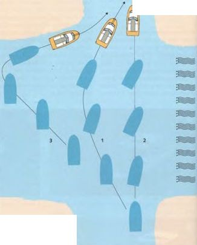
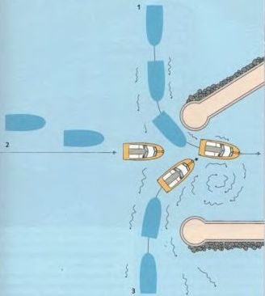

На реках и других водоемах с течением поведение судна в значительной степени зависит от течения. Попутное течение увеличивает скорость лодки относительно берега. Встречное течение соответственно уменьшает ее. Чем медленнее движется лодка, тем заметнее влияние течения. Его необходимо учитывать при всех маневрах остановки и швартовки.
Полезный прием для планирования маневров: представьте, что неподвижная точка на берегу — это транспортное средство, которое приближается или удаляется со скоростью течения. Если согласовать с этим свою скорость, почти не случится, что вы пройдете цель с слишком большой скоростью или что она «уплывет» от вас.
Попутное или встречное течение само по себе не уводит судно с курса. Это происходит только тогда, когда направление течения и курс образуют угол. При боковом течении снос (боковой дрейф) наибольший. Он также зависит от силы (скорости) течения. Если при сильном боковом течении направить нос точно на цель, фактически получится дугообразный курс, так называемая «собачья кривая». Поэтому рекомендуется держать нос немного против течения, то есть идти с упреждением — направлять нос на точку выше по течению относительно цели. Чем сильнее течение, тем больше должен быть угол упреждения. Однако это не всегда разумно. Иногда практичнее позволить течению сносить судно к подветренной стороне в середине реки и затем с небольшой мощностью двигателя вернуться вверх по течению в спокойной воде у берега. Особенно при слабом моторе рекомендуется этот метод.

Пересечение течения
При пересечении реки прямой курс приводит к так называемой «собачьей кривой» (1). Чтобы избежать этого, необходимо, в зависимости от силы течения, держать нос более или менее вверх по течению (2). Это требует мощности двигателя. Если же позволить течению сносить лодку и затем медленно вернуться вверх по течению в более спокойной воде у берега, движение будет значительно экономичнее, несмотря на небольшой крюк (3).

Вход в гавань с течением
То же самое относится и к прохождению между опорами мостов при поперечном течении.
Силу течения можно определить по наклону плавающих знаков фарватера, буев и по водоворотам, образующимся за ними. Однако точно определить скорость течения по этим признакам можно только с опытом.
► В глубокой воде, ближе к середине реки, течение обычно самое сильное. Поэтому при слабом моторе при движении вниз по течению лучше держаться глубокой воды, а при движении вверх по течению использовать более мелкие прибрежные зоны со слабым течением.
Внимание: в изгибах реки основное быстрое течение проходит по внешней стороне изгиба непосредственно у берега. В этом случае говорят о «прижимном течении».
Большинство речных гаваней имеют защитную стенку, проходящую параллельно берегу. Вход в гавань обычно обращен вниз по течению. При входе лучше держаться ближе к окончанию мола, поскольку у берега часто лежит обширная отмель.
Перед выходом необходимо следить за входящими судами, которые могут внезапно появиться из‑за поворота.
В некоторых гаванях для маломерных судов при входе и выходе также предписаны звуковые сигналы.